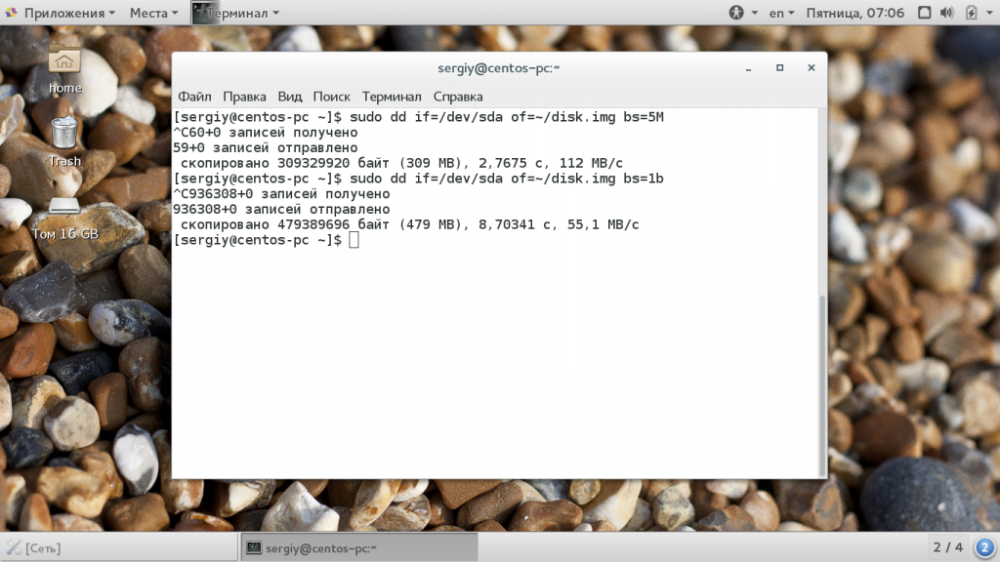
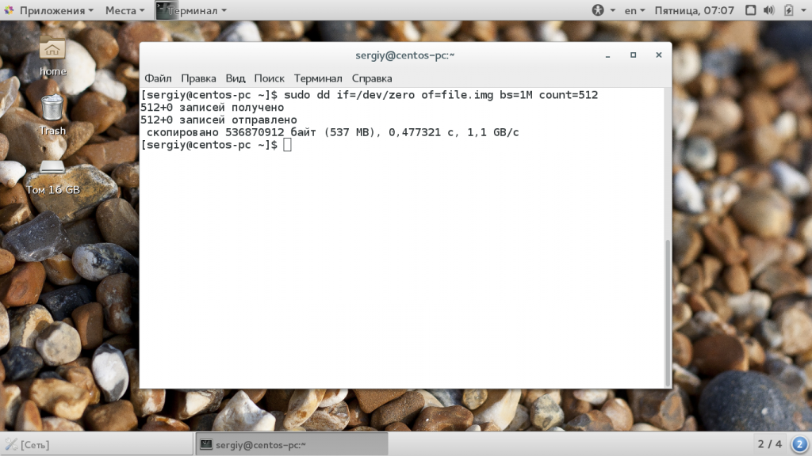

Синтаксис утилиты достаточно необычен, но в то же время очень прост, после того как вы его запомните и привыкнете:
$ dd if=источник_копирования of=место_назначения параметры
С помощью параметра if вам нужно указать источник, откуда будут копироваться блоки, это может быть устройство, например, /dev/sda или файл - disk.img. Дальше, с помощью параметра of необходимо задать устройство или файл назначения. Другие параметры имеют такой же синтаксис, как if и of.
Теперь давайте рассмотрим дополнительные параметры:
Это были все основные опции, которые вам могут понадобиться. Теперь перейдем ближе к практике и рассмотрим несколько примеров как пользоваться утилитой dd linux.
Обычные пользователи используют команду dd чаще всего для создания образов дисков DVD или CD. Например, чтобы сохранить образ диска в файл можно использовать такую команду:
sudo dd if=/dev/sr0 of=~/CD.iso bs=2048 conv=noerror
Фильтр noerror позволяет отключить реагирование на ошибки. Дальше, вы можете создать образ жесткого диска или раздела на нем и сохранить этот образ на диск. Только смотрите не сохраните на тот же жесткий диск или раздел, чтобы не вызвать рекурсию:
dd if=/dev/sda of=~/disk.img
В вашей домашней папке будет создан файл с именем disk1.img, который в будущем можно будет развернуть и восстановить испорченную систему. Чтобы записать образ на жесткий диск или раздел достаточно поменять местами адреса устройств:
dd of=~/disk.img if=/dev/sda
Очень важная и полезная опция - это bs. Она позволяет очень сильно влиять на скорость работы утилиты. Этот параметр позволяет установить размер одного блока при передаче данных. Здесь нужно задать цифровое значение с одним из таких модификаторов формата:
Команда dd linux использует именно такую систему, она сложная, но от этого никуда не деться. Ее придется понять и запомнить. Например, 2b - это 1 килобайт, и 1k, это тоже 1 килобайт, 1М - 1 мегабайт. По умолчанию утилита использует размер блока - 512 байт. Например, чтобы ускорить копирование диска можно брать блоки размером по 5 мегабайт. Для этого применяется такая команда:
dd if=/dev/sda of=~/disk.img bs=5M

Следующий параметр - это count. С помощью него можно указать сколько блоков необходимо скопировать. Например, мы можем создать файл размером 512 мегабайт, заполнив его нулями из /dev/zero или случайными цифрами из /dev/random:
sudo dd if=/dev/zero of=file.img bs=1M count=512

Обратите внимание, что этот параметр указывает не размер в мегабайтах, а всего лишь количество блоков. Поэтому, если вы укажите размер блока 1b, то для создания файла размером 1Кб нужно взять только два блока. С помощью этого параметра также можно сделать резервную копию таблицы разделов MBR. Для этого скопируем в файл первые 512 байт жесткого диска:
sudo dd if=/dev/sda of=mbr.img bs=1b count=1
Для восстановления используйте обычную команду развертывания образа на диск.
Если образ диска слишком большой, можно перенаправить весь вывод нестандартный поток вывода утилиты gzip:
dd if =/dev/sda2 | bzip2 disk.img.bz2
Также можно использовать утилиту dd linux для копирования файлов, хотя это и не является ее прямым предназначением:
dd if=/home/sergiy/test.txt of=/home/sergiy/test1.txt
Как вы знаете, команда dd linux пишет данные на диск непосредственно в двоичном виде, это значит, что записываются нули и единицы. Они переопределяют то, что было раньше размещено на устройстве для записи. Поэтому чтобы стереть диск вы можете просто забить его нулями из /dev/zero.
sudo dd if=/dev/zero of=/dev/sdb
Такое использование dd приводит к тому что весь диск будет полностью стерт.
В этой статье мы рассмотрели как пользоваться dd linux, для чего можно применять эту утилиту и насколько она может быть полезной. Это почти незаменимый инструмент системного администратора, поскольку с помощью нее можно делать резервные копии целой системы. И теперь вы знаете как. Если у вас остались вопросы, спрашивайте в комментариях!
�